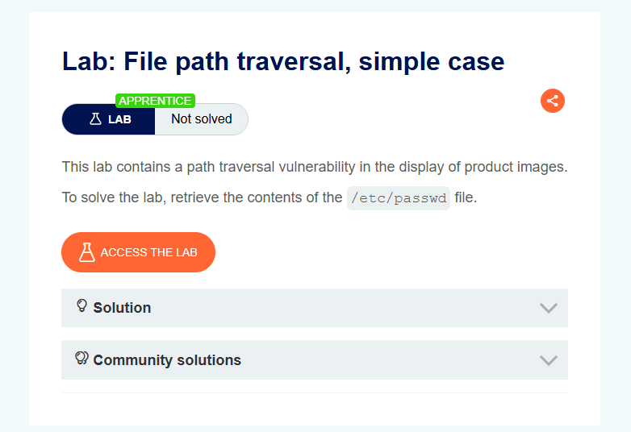
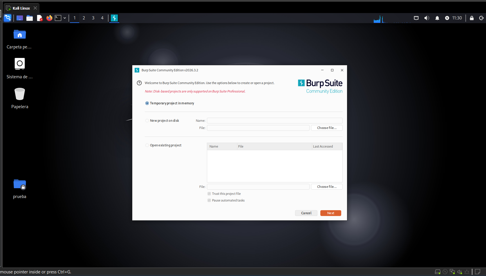
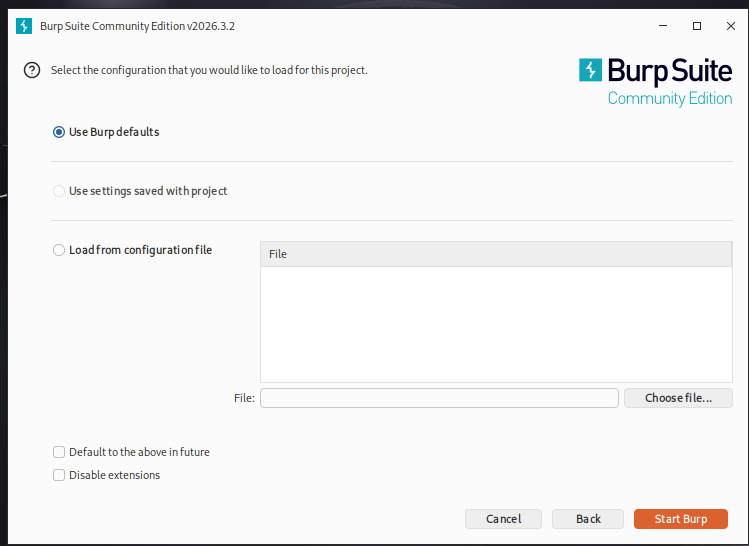
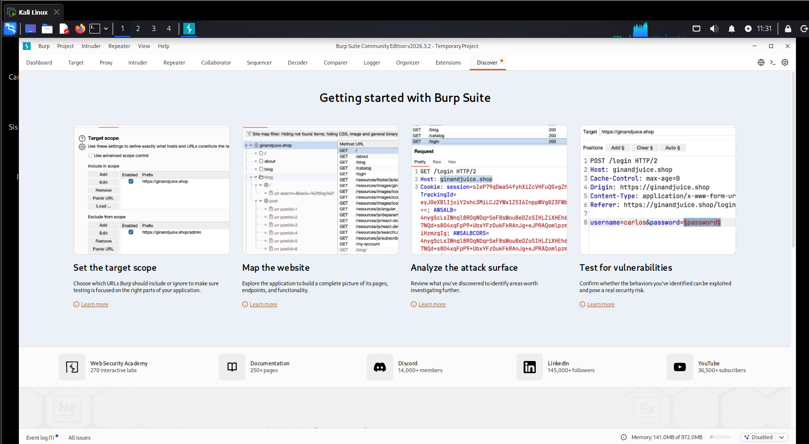
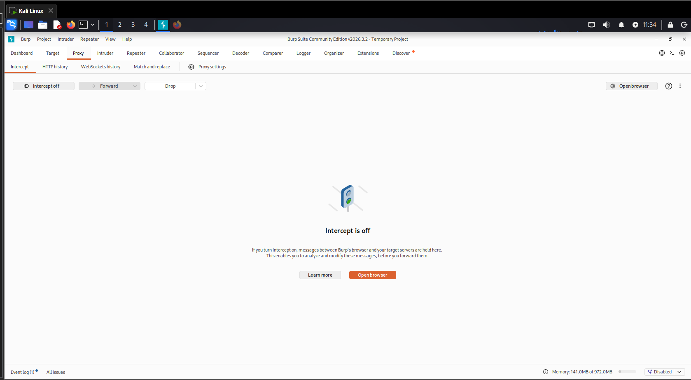
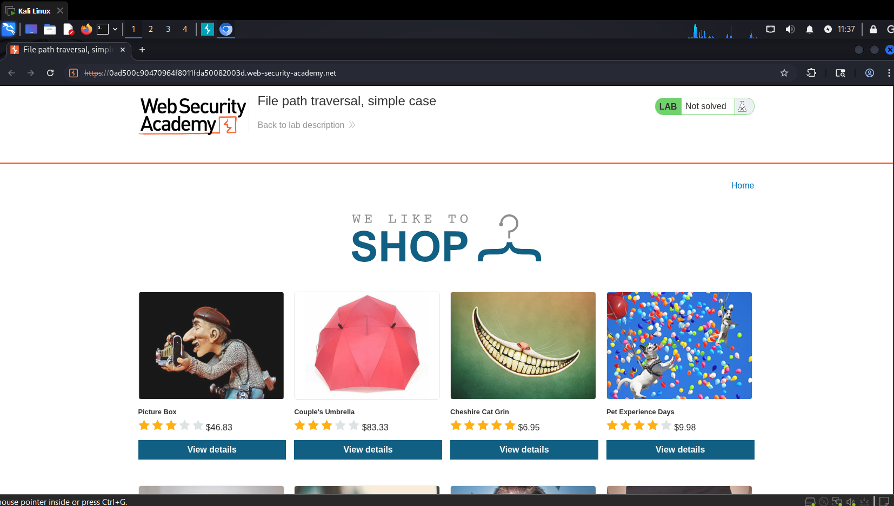
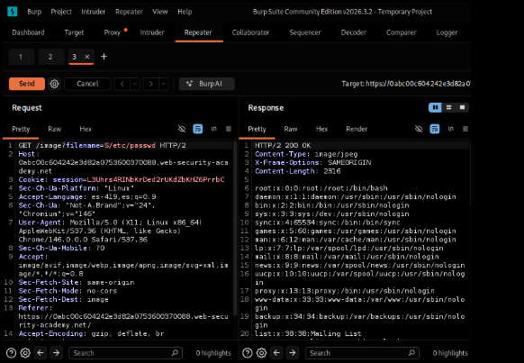
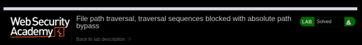

Lab 08: Absolute Path Bypass
PortSwigger Web Security Academy | Herramienta: Burp Suite Community Edition
01_Nombre del laboratorio
File path traversal, traversal sequences blocked with absolute path bypass
URL del laboratorio: https://portswigger.net/web-security/file-path-traversal/lab-absolute-path-bypass
El laboratorio presenta un mecanismo de defensa básico (bloqueo de secuencias de recorrido relativo) que el atacante debe evadir usando una ruta absoluta directa hacia el archivo objetivo para recuperar el contenido de /etc/passwd.


02_Nivel
Practitioner (Intermedio).
Este laboratorio sube la dificultad al incluir un filtro de seguridad en el backend. El reto consiste en comprender las limitaciones de los filtros de "lista negra" (blacklisting) y aprovechar la forma en que los sistemas operativos procesan las rutas absolutas para lograr el bypass.
03_Tipo de explotación
File Path Traversal (también conocido como Directory Traversal o recorrido de directorios), clasificado dentro de las vulnerabilidades de lectura arbitraria de archivos (Arbitrary File Read).
La vulnerabilidad ocurre cuando la aplicación web intenta validar la entrada del usuario bloqueando secuencias típicas de salto de directorio (como ../ o ..\), pero falla al no comprobar si el valor proporcionado es una ruta absoluta desde la raíz del sistema de archivos.
Al existir esta validación incompleta, el atacante no puede usar saltos relativos, pero puede enviar directamente:
El servidor recibe esta ruta absoluta y, al no detectar los patrones ../ bloqueados, la procesa de forma directa, saltándose el directorio de trabajo previsto para las imágenes y mostrando el contenido del archivo del sistema operativo.
Consecuencias: Lectura de archivos sensibles, obtención de credenciales del sistema, conocimiento de la estructura interna del servidor y posible escalada a otras vulnerabilidades (como LFI).
04_Objetivo del laboratorio
Demostrar la explotación de una vulnerabilidad de File Path Traversal evadiendo un filtro de seguridad que bloquea secuencias de recorrido (../). Esto se logra enviando una ruta absoluta a través del parámetro filename de la petición HTTP que carga las imágenes de los productos, con el fin de leer el contenido del archivo /etc/passwd del servidor y obtener la confirmación de "Lab solved".
05_Explicación técnica de la vulnerabilidad
La tienda en línea carga las imágenes de los productos a través de una petición HTTP GET con un parámetro filename:
El Filtro Incompleto
La aplicación implementa una medida de seguridad que busca y bloquea o elimina explícitamente secuencias de recorrido relativas (como ../). Sin embargo, el servidor asume que el nombre de archivo suministrado siempre será relativo a un directorio de trabajo predeterminado (por ejemplo, /var/www/images/). La falla técnica radica en que la función backend (API del sistema de archivos) que abre el recurso permite el uso de rutas absolutas.
El Bypass
Al enviar directamente la ruta absoluta /etc/passwd, el filtro de seguridad nunca se activa porque la entrada no contiene las secuencias prohibidas ../. El sistema de archivos evalúa la entrada partiendo de la raíz (/) e ignora por completo el directorio base predeterminado de la aplicación. Esto constituye un fallo clásico de validación de entrada por depender exclusivamente de una lista negra (blacklist) incompleta.
06_Procedimiento paso a paso
Paso 1 — Preparación del entorno
Se inició Burp Suite Community Edition seleccionando en las configuraciones iniciales Temporary project in memory y posteriormente Use Burp defaults.

Paso 2 — Interceptación y Navegación
Con Burp abierto en la pestaña Proxy → Intercept, se abrió el navegador integrado y se accedió a la URL del laboratorio. Se desactivó el interceptor para que el sitio cargara correctamente.

Paso 3 — Identificación de la petición objetivo
Se navegó a la página de un producto (clic en "View details"), lo que disparó la petición que carga la imagen del producto. Se buscó esta petición en la pestaña HTTP history.

Paso 4 — Preparación del Ataque en Repeater
Una vez localizada la petición GET hacia el endpoint de imágenes (GET /image?filename=...), se envió la solicitud al módulo Repeater (clic derecho → "Send to Repeater").

Paso 5 — Modificación del Payload (Bypass)
En la línea 1 del request, dentro de la pestaña Repeater, se modificó el valor del parámetro filename. Sabiendo que los saltos ../ están bloqueados, se reemplazó el nombre original de la imagen por la ruta absoluta maliciosa directamente:

/etc/passwd evadiendo el filtro.Se presionó "Send".
Paso 6 — Análisis y Confirmación
En el panel Response se observó una respuesta HTTP/2 200 OK devolviendo el contenido completo del archivo de usuarios. Al regresar al navegador y recargar, se validó la resolución del reto.

/etc/passwd, confirmando el bypass del filtro y resolviendo exitosamente el laboratorio.07_Explicación del payload
Payload utilizado:
A diferencia del laboratorio de caso simple, en este payload no se utilizan secuencias de retroceso de directorio (../).
| Elemento | Función |
|---|---|
/ |
El carácter inicial de barra diagonal le indica al sistema de archivos basado en Unix que la ruta proporcionada es absoluta. Es decir, le obliga a iniciar la búsqueda directamente desde la raíz del sistema operativo y no de forma relativa al directorio actual (ej. /var/www/images/). |
etc/passwd |
La ubicación estándar del archivo objetivo que contiene la lista de usuarios del sistema. |
¿Por qué funciona el Bypass? Al introducir la ruta absoluta completa, la validación de la aplicación no detecta ningún patrón de recorrido (como ../) que deba bloquear de acuerdo a su "lista negra". Acto seguido, la API del sistema de archivos interpreta la barra inicial, ignora la ruta base predeterminada (porque se le está dictando explícitamente desde dónde comenzar), y permite leer el archivo de la raíz sin restricciones.
08_Mitigación recomendada
- Evitar listas negras (Blacklists). Tratar de predecir y bloquear (stripping) combinaciones maliciosas rara vez funciona. Siempre es mejor usar un enfoque de permisos estrictos (listas blancas).
- No usar entradas de usuario como rutas directas. Es la medida más efectiva. Usar identificadores indirectos (IDs numéricos en base de datos) mapeados del lado del servidor a los archivos físicos.
- Validación estricta con ruta canónica. Si es estrictamente necesario procesar la entrada, la aplicación debe resolver la ruta absoluta real (usando
getCanonicalPath()en Java orealpath()en PHP) y verificar rigurosamente que esta ruta resultante comience exactamente con la ruta del directorio base permitido. - Lista blanca (Whitelist) de caracteres. Implementar validación mediante Expresiones Regulares (RegEx) que acepte únicamente caracteres alfanuméricos seguros y una extensión válida (ej.
^[a-zA-Z0-9_-]+\.jpg$), rechazando inmediatamente cualquier intento de usar barras (/o\).
09_Conclusión
Este laboratorio demuestra las deficiencias de emplear listas negras para la sanitización de inputs. Bloquear patrones conocidos como el salto de directorio no es suficiente si las funciones internas (como abrir un archivo) admiten otros formatos (como rutas absolutas directas). Solo un diseño seguro, respaldado por listas blancas y validaciones canónicas, puede detener eficazmente los recorridos de rutas.
[ Reporte técnico — Actividad 08: File Path Traversal, Absolute Path Bypass ]